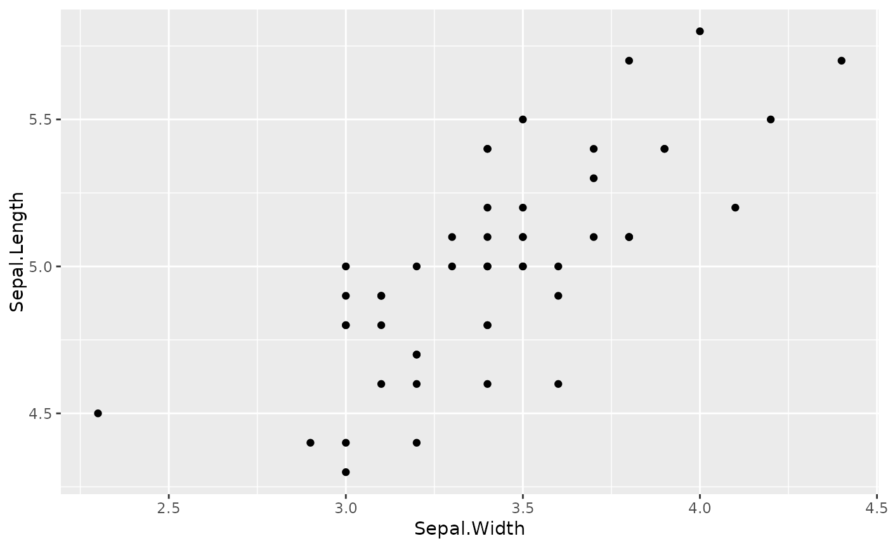

This is a convenience function to allow layer objects, such as geoms, to take
a subset of the data in the main ggplot() call, without storing a
duplicate of the subset in the ggplot object.
Value
A function that takes a data.frame as argument and returns a
subset of that data.frame according to rowtest
Details
ggsubset is a wrapper around subset.data.frame where
the subset argument is set to rowtest and the select
argument to -omit. Since the data argument in the
layer() function can take a function with one argument, we can pass
the function returned from ggsubset as that argument to subset the
data by rows.
See also
See ggplot2::layer(), specifically the data
argument. See subset.data.frame() for the internal
function.
Examples
ggplot(iris, aes(Sepal.Width, Sepal.Length)) +
geom_point(data = ggsubset(Species == "setosa"))
#> Warning: `ggsubset()` was deprecated in ggh4x 0.2.0.
#> ℹ This is best replaced by using `data = ~ subset(.x, ...)` instead.
